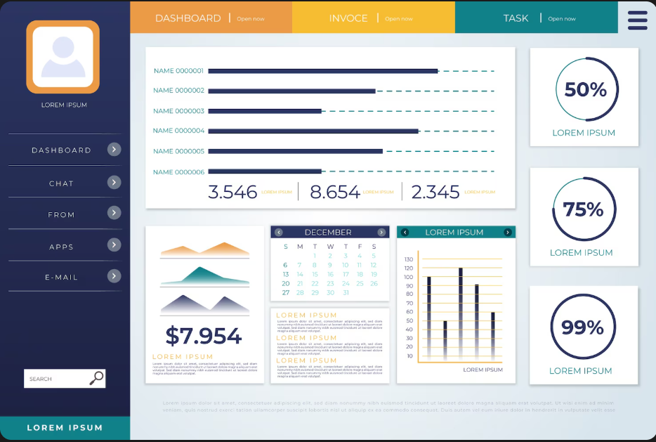

AutoTaller ERP
Manual Técnico y Guía de Despliegue

Documentación Técnica Oficial
Stack Tecnológico
El sistema AutoTaller ERP está construido sobre una arquitectura moderna, escalable y en tiempo real, utilizando las últimas tecnologías del ecosistema de Microsoft, estructurado bajo el patrón Clean Architecture (Dominio, Aplicación, Infraestructura y Web).

Figura 1: Tecnologías clave utilizadas en el desarrollo
- Presentación (Frontend): Blazor Server (.NET 8), con componentes visuales de MudBlazor 7 y Material Icons para una experiencia rica de usuario (SPA) sin escribir JavaScript.
- Aplicación y Dominio (Backend): C# 12, .NET 8 Core. Inyección de dependencias nativa, DTOs e interfaces estrictas.
- Infraestructura (Datos): Entity Framework Core 8, conectado nativamente a SQL Server 2022.
- Autenticación y Seguridad: ASP.NET Core Identity con autenticación basada en cookies, protección antiforgery y hashing fuerte.
- Comunicación Tiempo Real: SignalR integrado en Blazor Server para actualizaciones automáticas del dashboard.
Módulos y Funcionalidades
El ERP centraliza las operaciones del taller mecánico en un único entorno integrado, compuesto por los siguientes módulos clave:

Figura 2: Arquitectura modular del sistema ERP
- Dashboard Ejecutivo: KPIs, estado de ventas, progreso de OTs y gráficas interactivas de desempeño.
- Taller y Órdenes de Trabajo (OT): Recepción de vehículos, checklist de inspección, asignación de mecánicos, fotos del estado inicial y gestión del flujo de trabajo (Kanban).
- Inventario y Repuestos: Control de stock en tiempo real, catálogos por marcas, almacenes y kardex de movimientos.
- Ventas y Facturación: Generación de presupuestos (cotizaciones), emisión de facturas/boletas de OTs cerradas, cuentas por cobrar y control de Caja (apertura/cierre).
- Compras y Proveedores: Órdenes de compra para repuestos, registro de proveedores y control de cuentas por pagar.
- CRM (Clientes): Registro de clientes (personas y empresas), historial de servicios, y parque automotor asociado a cada cliente.
- Agenda: Calendario interactivo para programación de citas que se transforman directamente en Recepciones.
- Personal: Gestión de técnicos, especialidades, registro de asistencia y cálculo de comisiones.
- Seguridad: Sistema de roles (Administrador, Recepcionista, Técnico, Cajero, etc.), bitácora de auditoría.
Requisitos Previos
Para instalar y ejecutar el proyecto fuente en una computadora nueva, se deben descargar e instalar las siguientes herramientas:
1. SDK de .NET 8.0: Descargar desde
Microsoft .NET.
2. SQL Server 2022 (Developer o Express): Descargar desde la página oficial de SQL Server.
3. SQL Server Management Studio (SSMS): Para visualización de la base de datos.
4. Visual Studio 2022 o VS Code: Entorno de desarrollo (IDE).
Paso a Paso: Configuración y Ejecución
1
Clonar/Copiar el Repositorio
Copia la carpeta completa erp-taller-automotriz a tu disco local (ej. C:\Proyectos\erp-taller-automotriz).
2
Configurar Cadena de Conexión
Abre el archivo src\ERP.TallerAutomotriz.Web\appsettings.json y verifica que el Server apunte a tu instancia local de SQL Server instalada. Ejemplo:
"ConnectionStrings": {
"DefaultConnection": "Server=TU_PC\\SQLEXPRESS;Database=TallerAutomotrizERP;Trusted_Connection=True;TrustServerCertificate=True;"
}
3
Restaurar Dependencias
Abre una terminal en la raíz del proyecto y ejecuta el comando para descargar todas las librerías necesarias de NuGet:
> dotnet restore
4
Generar Base de Datos
Asegúrate de tener instalada la herramienta de EF Core. Luego ejecuta la actualización. Esto creará la BD y todas las tablas automáticamente.
> dotnet tool install --global dotnet-ef
> dotnet ef database update -p src/ERP.TallerAutomotriz.Infrastructure -s src/ERP.TallerAutomotriz.Web
5
Ejecutar la Aplicación
Ejecuta el proyecto Web. En el primer inicio, el sistema inyectará datos de prueba (clientes, admin, configuración inicial) automáticamente (Seed).
> dotnet run --project src/ERP.TallerAutomotriz.Web
Accede a https://localhost:7057 y utiliza las credenciales admin@taller.com / Admin123$.
Hosting Web Recomendado
Dado que el sistema está construido en Blazor Server (.NET 8) y SQL Server, las mejores opciones para un despliegue profesional y robusto son plataformas optimizadas para el ecosistema Windows/Microsoft. La mejor opción, por escalabilidad y compatibilidad perfecta es Microsoft Azure, seguido de servicios especializados en Windows Hosting como SmarterASP.NET o Hostinger (VPS Windows).
Nuestra recomendación: Microsoft Azure App Service
Ofrece un entorno PaaS (Plataforma como Servicio) donde no te preocupas por configurar el servidor (IIS). Tiene soporte nativo para WebSockets (requerido por Blazor Server) e integraciones directas con Azure SQL Database.

Figura 3: Arquitectura propuesta para despliegue en la Nube
Paso a Paso: Subir la Aplicación a Azure
1
Crear Base de Datos en la Nube (Azure SQL)
Entra al Portal de Azure, busca "SQL Databases" y crea una nueva. Selecciona un plan básico (Ej. Basic o S0). Configura un usuario y contraseña y asegúrate de permitir el acceso de IPs en el Firewall de la BD.
2
Crear el Servicio Web (App Service)
En el Portal de Azure, crea un "Web App". Selecciona .NET 8 (LTS) como el "Runtime stack" y elige el sistema operativo Windows. En las configuraciones del App Service, navega a "Configuración" -> "Configuración general" y asegúrate de encender la opción WebSockets (CRÍTICO para Blazor Server).
3
Configurar Variables de Entorno
En la sección "Variables de entorno" de tu App Service, añade una nueva cadena de conexión llamada DefaultConnection y pon la URL de conexión que te dio Azure SQL en el Paso 1.
4
Publicar desde Visual Studio 2022
1. En Visual Studio, haz clic derecho en el proyecto ERP.TallerAutomotriz.Web y selecciona Publish (Publicar).
2. Elige Azure como destino.
3. Selecciona Azure App Service (Windows) y conecta tu cuenta de Microsoft.
4. Selecciona el App Service que creaste en el paso 2.
5. En las opciones de publicación, puedes activar la opción "Apply this migration on publish" para que cree las tablas en Azure SQL automáticamente.
6. Haz clic en Publish. ¡Listo! El ERP estará vivo en internet.